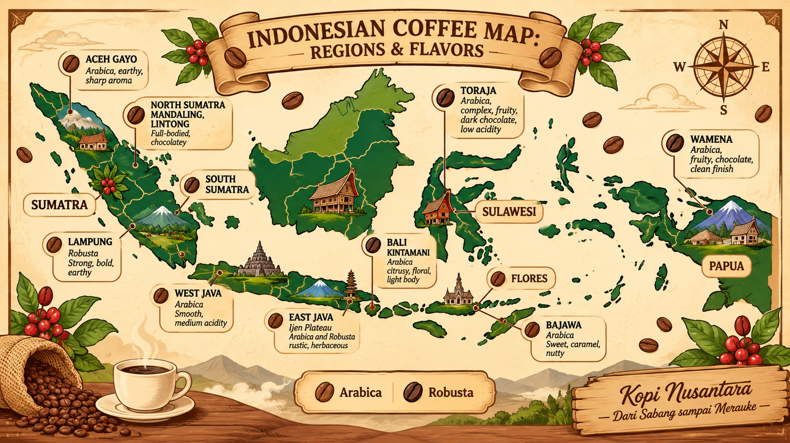

Dari Sabang sampai Merauke
Kenali kopi Nusantara, satu cangkir demi satu cangkir.
Jelajahi kopi dari Aceh, Jawa, Bali, Toraja, Flores, sampai Papua, lalu pelajari cara menyeduhnya sendiri di rumah.
Kenapa kopi Indonesia istimewa?
Tanah yang beragam
Gunung berapi, dataran tinggi, dan iklim tropis membuat rasa kopi tiap daerah berbeda.
Dua jenis utama
Arabika yang kompleks dan beraroma, serta Robusta yang pahit, kental, dan kuat.
Cara seduh khas
Dari kopi tubruk yang sederhana sampai V60 yang rapi, semuanya bisa dicoba di rumah.
JELAJAHI KEKAYAAN NUSANTARA
Peta Persebaran Kopi Indonesia
Indonesia memiliki beragam kopi khas dari berbagai daerah. Setiap wilayah mempunyai karakteristik aroma, rasa, dan keunikan tersendiri. Yuk, kenali kopi dari Sabang sampai Merauke!

☕ Kopi Nusantara - Dari Sabang sampai Merauke
Cari kopi sesuai seleramu
Pilih rasa yang kamu suka, nanti kami tampilkan kopi yang cocok.
Tahukah kamu?